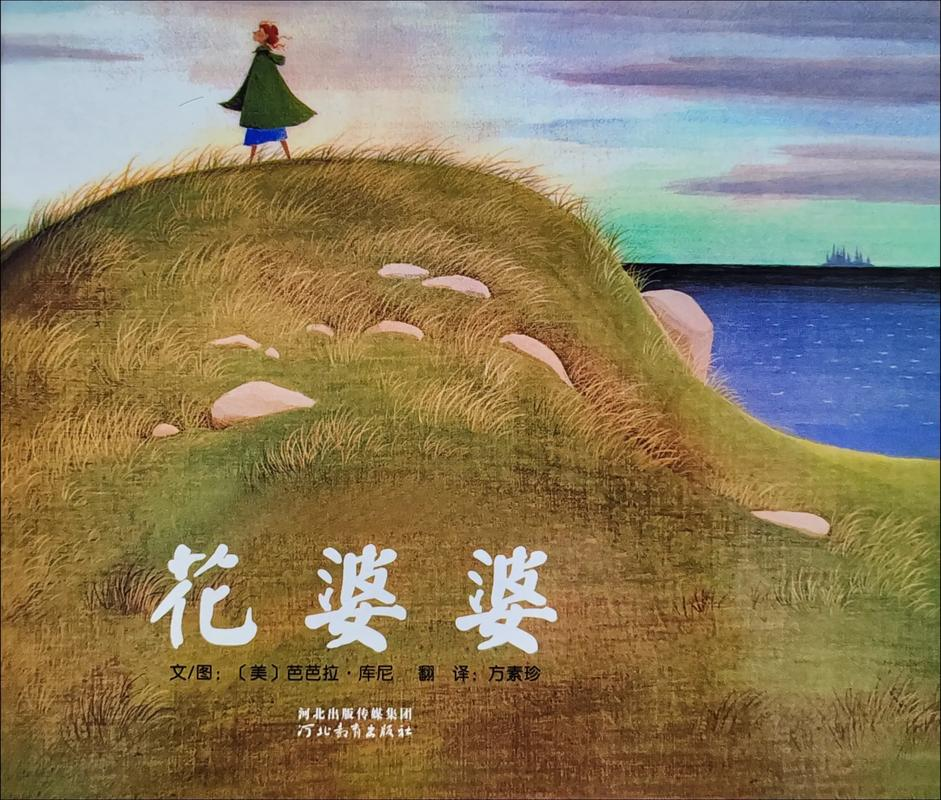
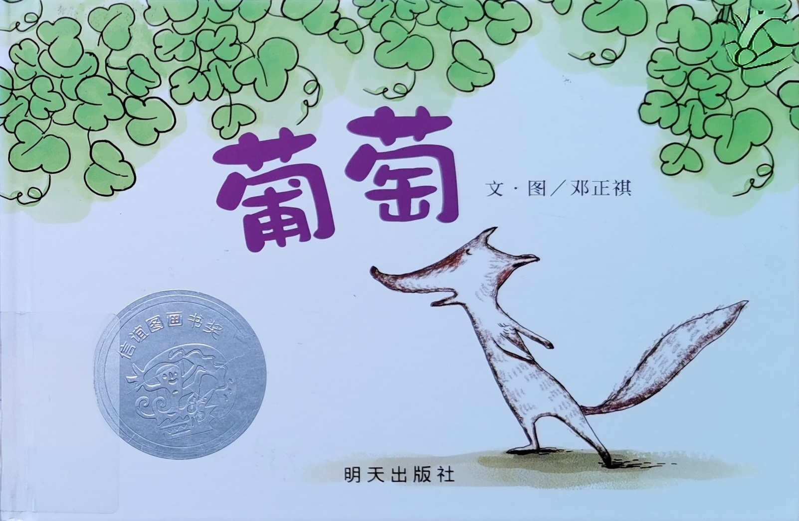
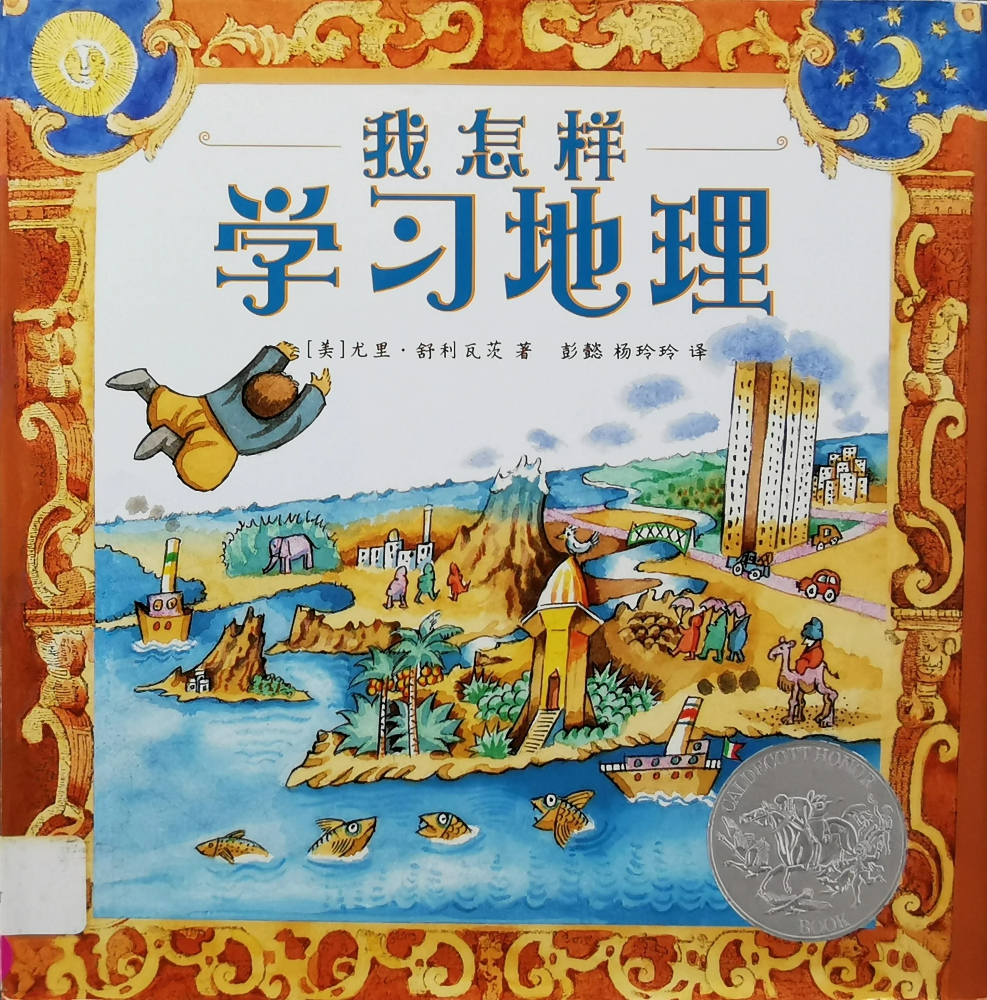
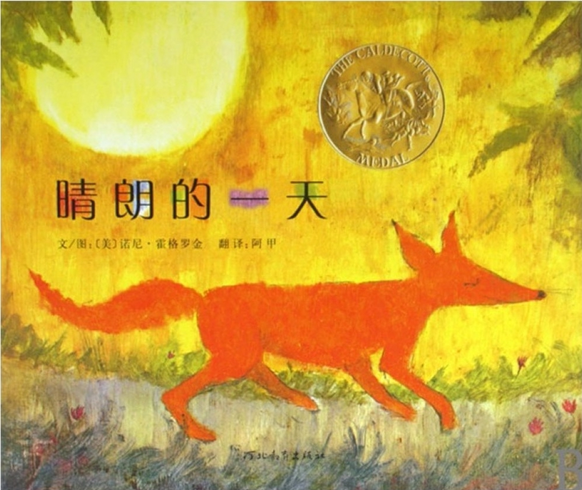

童行
与孩子同行，
在阅读中遇见光。

第1周 · 《大蝌蚪》
“...,若不像小孩子，断不能进去。”

第2周 · 《我要把我的帽子找回来》
“...并且人要奉他的名传悔改、赦罪的道...”

第3周 · 《花婆婆》
“你们为何静坐不动呢？要急速前往得那地为业，不可迟延。”

第4周 · 《葡萄》
“我爱你们，正如父爱我一样；你们要常在我的爱里。”
第5周 · 《市场街最后一站》
“你们就必得着能力，并要在耶路撒 冷、犹太全地，和撒马利亚，直到地极，作我的见证。”

第6周 · 《我怎样学习地理》
“这约凡事坚稳， 关乎我的一切救恩和我一切所想望的， 他岂不为我成就吗？”

第7周 · 《晴朗的一天》
“因你将我定要灭绝的人放去， 你的命就必代替他的命，你的民也必代替他的民。”